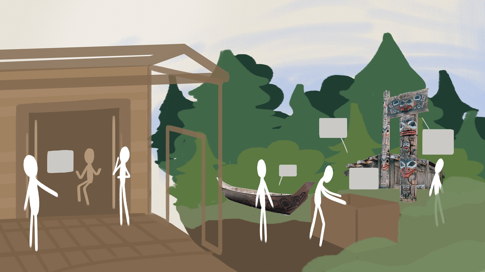
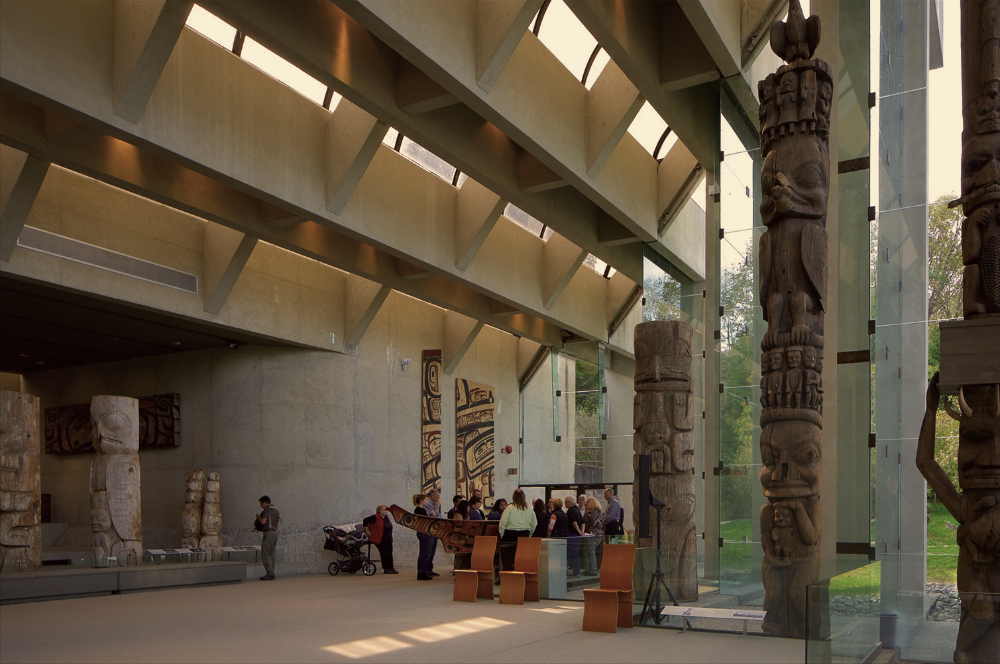
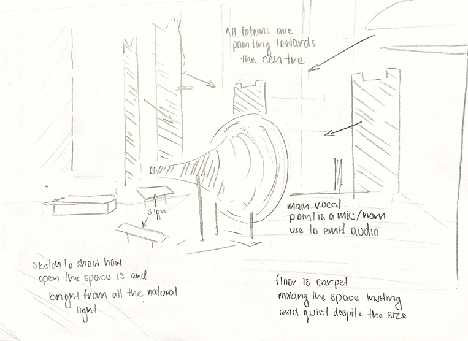
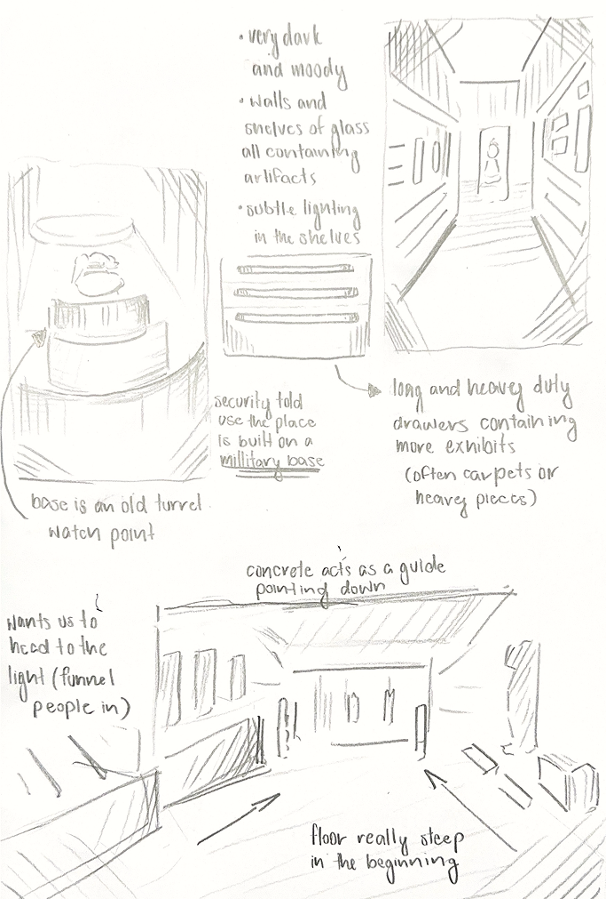
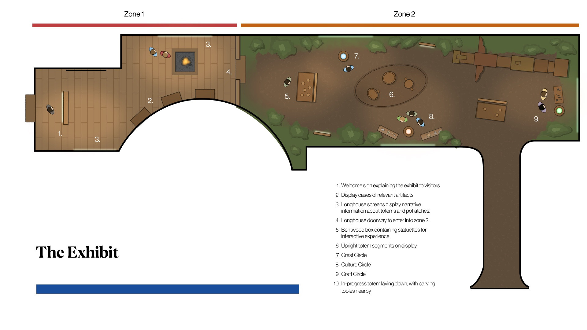
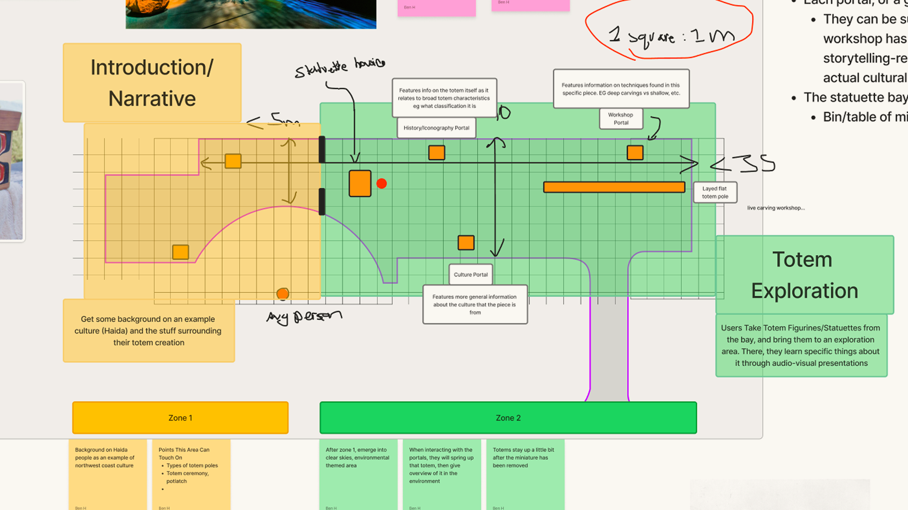
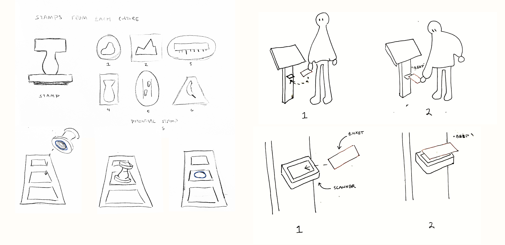
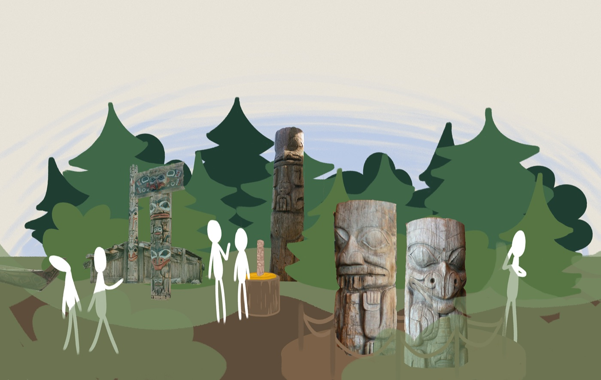
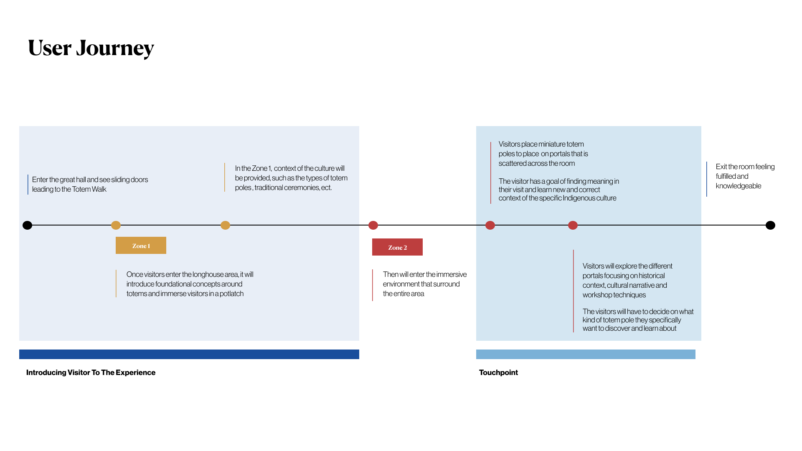

THE TOTEM JOURNEY | interactive experience concept
This was a three-week project for IAT 238 (Foundations for Designing Interactions), where our team created an experimental walkthrough experience for a local museum, prioritizing creative exploration over technical constraints.
- Role
- field researcher
- creative director
- visual designer
- Client
- Museum of Anthropology, UBC
- Timeline
- 3 weeks | 2025
Overview
Our project was designed for the Museum of Anthropology, which showcases global artifacts with a focus on local Indigenous history. We conducted a field study to understand the space, its purpose, and its constraints, building our concept around the museum’s existing exhibit values.
Role
My contributions centered on field research, creative direction, and visual design. I focused primarily on analyzing the exhibit experience and shaping our concept’s overall direction.

Research
To understand the visitor journey, I explored the exhibits, conducted interviews with visitors and staff, and analyzed online reviews. This research revealed that despite the museum’s intended narratives, the space lacked key interactive touchpoints to truly connect with visitors.


Ideation
During ideation, I generated concepts and narrowed them down into achievable directions. Encouraged by the project guidelines, I pushed for ambitious ideas through a dynamic, non-linear workflow.


Problem
A major challenge came when our first two weeks of work were rejected for focusing too much on practical wayfinding rather than creative experimentation. This taught me to let go of initial ideas and view setbacks as opportunities to explore bolder, more progressive concepts.


Final Concept
For the final design, I aligned our concept with the museum’s core values by contextualizing the totem poles within their authentic cultural uses, creating an immersive space grounded in storytelling and cultural transparency.

Reflection
Totem Journey taught me the value of designing with respect for cultural narratives, as well as the importance of creative resilience when a project pivots.